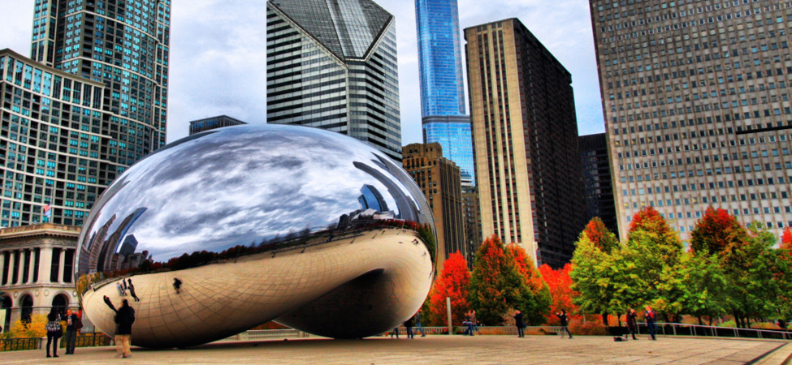

class="introduction"
class="key-equations" title="Key Equations"class="key-concepts" title="Summary"class="review-conceptual-questions" title="Conceptual Questions"class="review-problems" title="Problems"class="review-additional-problems" title="Additional Problems"class="review-challenge" title="Challenge Problems"class="try"class="checkpoint"class="section-exercises"class="check-understanding"Cloud Gate is a public sculpture by Anish Kapoor located in Millennium Park in Chicago. Its stainless steel plates reflect and distort images around it, including the Chicago skyline. Dedicated in 2006, it has become a popular tourist attraction, illustrating how art can use the principles of physical optics to startle and entertain. (credit: modification of work by Dhilung Kirat)

This chapter introduces the major ideas of geometric optics, which describe the formation of images due to reflection and refraction. It is called “geometric” optics because the images can be characterized using geometric constructions, such as ray diagrams. We have seen that visible light is an electromagnetic wave; however, its wave nature becomes evident only when light interacts with objects with dimensions comparable to the wavelength (about 500 nm for visible light). Therefore, the laws of geometric optics only apply to light interacting with objects much larger than the wavelength of the light.